概要¶
TECS コンポーネント図は、コンポーネントを組み合わせて構築されるソフトウェアの構造を示すものとなります。
TECS コンポーネント図では、コンポーネントの属性値を除いて、TECS コンポーネント記述言語 (TECS CDL) の組上げ記述 (セル記述) と一対一に対応します。 つまり TECS コンポーネント図は、TECS CDL のソースとして用いることができますし、反対に TECS CDL の組上げ記述をコンポーネント図に表すことができます。
TECS コンポーネント図を記述する上での注意点として、レイア (階層) を意識して書くようにします。 上位レイアにはアプリケーション、下位レイアにはデバイスドライバや OS カーネルが位置します。 上位レイアは、図の上部、または左側に、下位レイアは図の下部、または右側に書くようにすると、直観的に理解しやすくなります。
TECS コンポーネント図の書き方¶
基本的なコンポーネント図¶
基本的な TECS コンポーネント図として、二つのセルが結合された図を示します。 セル、すなわちコンポーネントインスタンスは、長方形により表します。 長方形の内側に、セルの属するセルタイプのセルタイプ名およびセル名を記します。 受け口は、セルの長方形の辺に沿って塗つぶした三角形を長方形の内向きに置き、受け口名を添えます。 呼び口は、セルの長方形の辺から始まる線分により表します。 呼び口名を添えます。 結合は、呼び口から受け口へ向かう線分により表します。 結合の線分に沿ってシグニチャ名を添えます。
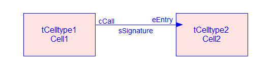
合流¶
結合の合流を示します。 一つの受け口に対し、複数の呼び口が結合することはできるが、その逆はできません。
合流する点には、3つの線分が集まるようにします。 4つの線分が集まる場合には、合流ではなく、2つの異なる受け口への結合の、図上の交差となるようにします。
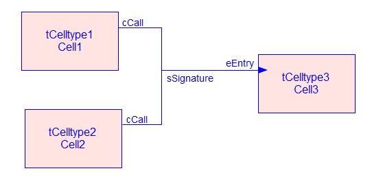
呼び口配列と受け口配列¶
呼び口配列と受け口配列の添数を対応付けて、コールバックを実現した例です。 複数の呼び元に対してコールバックを実現する場合には、この例のように呼び口と受け口を対応付けて結合します。
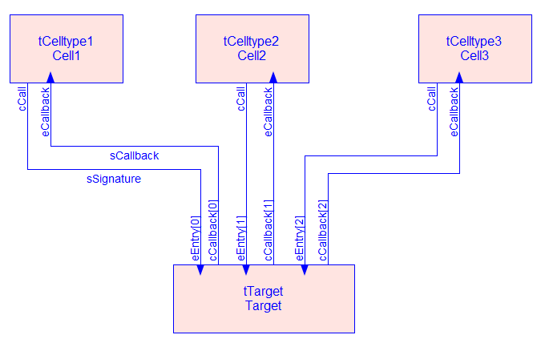
複合セル(composite)¶
複合セル(composite) を示す TECS コンポーネント図です。 この図では compcell1 が複合セルですが、複合セルであることを明示しません。 コンポーネント図、および TECS CDL による組上げ記述では、複合セルと非複合セルを区別しません。
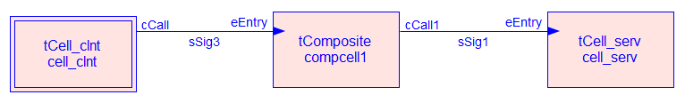
これは、複合セルの内部のセルを描いた図です。 通常、複合セルの内部のセルは、コンポーネント図に描きません。
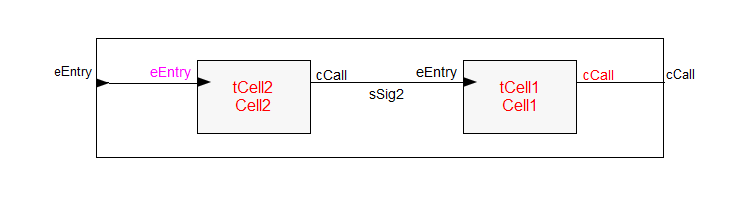
RPC¶
リモート呼び出しを行うための接続を示すTECS コンポーネント図です。 通常の結合とは異なり、二重線により接続を表します。
SysLog は、リクワイアされるために必要となっています。
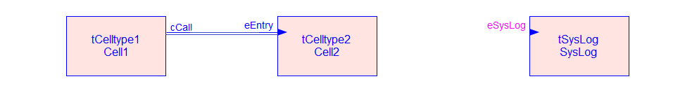
二重線で示される接続は、次のような RPC チャンネルコンポーネントに置き換えられます。 RPC チャンネルコンポーネントは、RPC チャンネルの種類によって内容が異なり、この図はトランスペアレント RPC の例になります。 この図は、説明のためのもので、通常この図は、用いません。
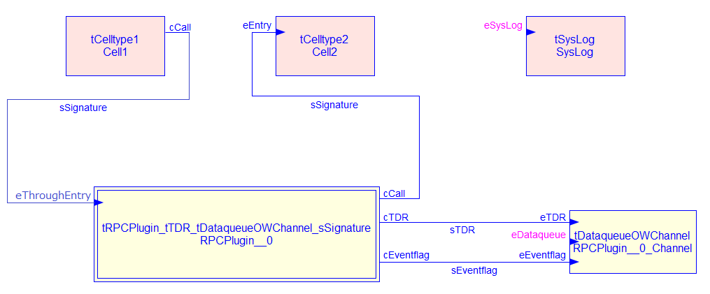
アロケータ¶
アロケータ、図のように結合の線に近接した▼からアロケータセルの受け口に結合の線を引いて表します。 TECS CDL で組上げ記述する場合には、受け口側で、アロケータセルを指定します。 コンポーネント図は、その記述に沿うものとなります。
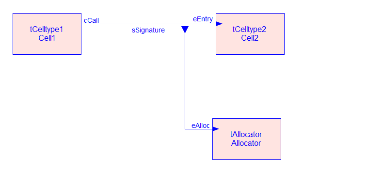
TECS ジェネレータにより、呼び元、および呼び先に send または receive 指定された引数に対応するアロケータ呼び口が内部生成されます。 この図は、内部生成されたアロケータ呼び口の結合を示します。 この図は、説明のためのもので、通常この図は、用いません。
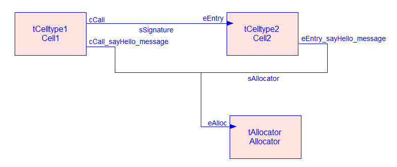
多段リレーモデル¶
多段リレーモデルを表すTECS コンポーネント図です。 多段リレーモデルでは、アロケータにより確保されて send または receive 指定された引き数として受け口に渡されたメモリ領域を、再び呼び口からsend 指定された引き数として呼び出す際に引き渡します。 TECS CDL で組上げ記述する場合には、このように最も右側の受け口で、アロケータセルを指定します。
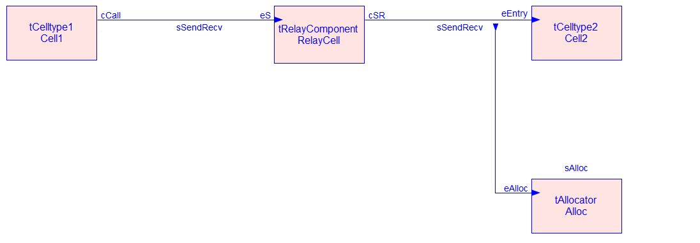
TECS ジェネレータにより、それぞれの呼び元、および呼び先に send または receive 指定された引数に対応するアロケータ呼び口が内部生成されます。 この図は、内部生成されたアロケータ呼び口の結合を示します。 この図は、説明のためのもので、通常この図は、用いません。
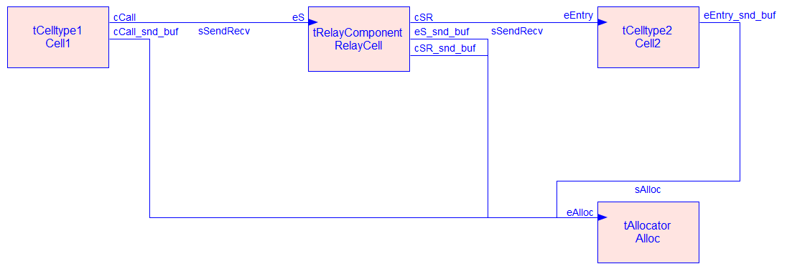